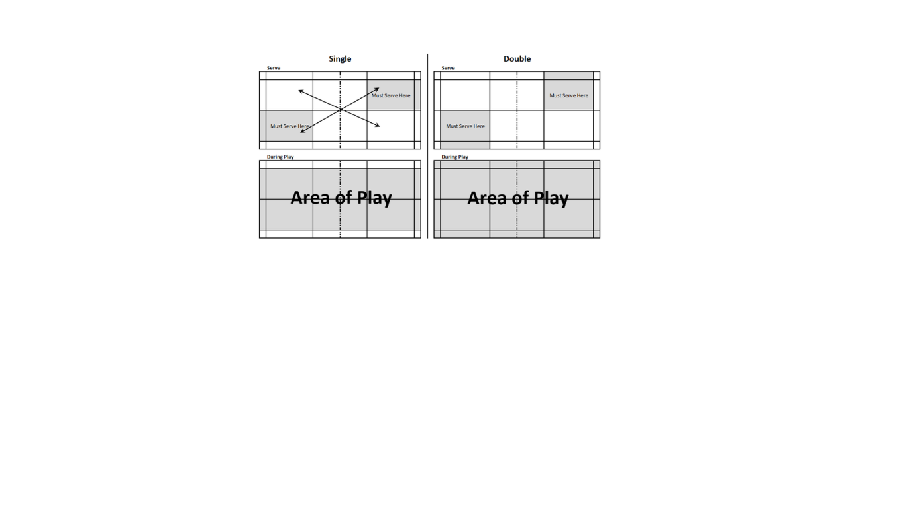

AGGS BADMINTON CLUB
BADMINTON RULES
For singles:
- It is at the beginning of the game (0-0)
and when the server's score is even, the
server serves from the right service court. - When the server's score is odd, the server serves
from the left service court.
If the server wins a rally, the server scores a point
and then serves again from the alternate service court. - If the receiver wins a rally, the receiver scores a point
and becomes the new server.
They serve from the appropriate service court - left if their
score is odd, and right if it is even.

For doubles:
- At the beginning of the game and
when the score is even, the server serves
from the right service court. - When it is odd, the server serves
from the left court. - If the serving side wins a rally, the
serving side scores a point and the same server
serves again from the alternate service court. - If the receiving side wins a rally,
the receiving side scores a point. The receiving side
becomes the new serving side.